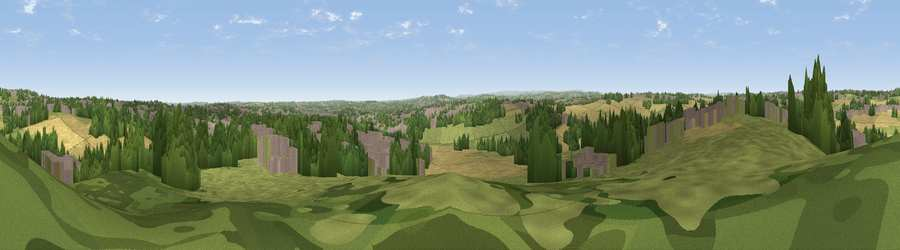

Viewpoint near Wrenthorpe
#33538 in England · top 66% of its area beats it · near Wrenthorpe · footpathWhere it is
The exact computed spot (SE 30225 22525). Click the marker for map links.
Public access: a public right of way passes within 28 m of this spot. Computed from Natural England's CRoW access layer and OpenStreetMap rights of way — not the legal definitive map. Always verify locally.
The view, rendered

A 360° render of this exact spot computed from the terrain model, tree cover and land cover — summer colours, afternoon light, calibrated against photographs of famous viewpoints. Real trees, hedges and buildings will differ in detail.
The panorama
Grey silhouette: terrain skyline in each direction (720 bearings, Earth curvature and refraction included). Dashed green: skyline with trees (+15 m) and buildings (+8 m) as obstacles. Blue strip: how far the ground is visible on each bearing.
Where the view opens
Wedge length = distance to the farthest visible ground on that bearing (vegetation-aware). Rings at 10, 25 and 50 km.
What fills the view
32% grassland · 25% cropland · 22% woodland · 21% built-up
Angular shares of the visible panorama (visual magnitude), not map area. Landscape diversity 0.60 (0–1 Shannon).
Key numbers
More beautiful places nearby
The staircase of upgrades: each row has a higher view potential than everything closer. Driving times are estimates from straight-line distance, calibrated against real road routing — check an actual route before setting out.
| Place | Direction | Drive | Score |
|---|---|---|---|
| Viewpoint near Ossett | SW · 4 km | ~9 min | 52.9 |
| Viewpoint near Lofthouse Gate | NE · 4 km | ~9 min | 56.2 |
| Viewpoint near Woodkirk | NW · 5 km | ~12 min | 62.1 |
| Viewpoint near Grange Moor | SW · 10 km | ~19 min | 69.8 |
| Castle Hill | WSW · 17 km | ~30 min | 70.2 |
| Viewpoint near Hoylandswaine | SSW · 18 km | ~31 min | 71.8 |
| Viewpoint near Hoylandswaine | SSW · 19 km | ~32 min | 72.7 |
| Viewpoint near Jackson Bridge | SW · 20 km | ~33 min | 73.5 |
53.69829, -1.54369 · source: screening · position refined by local search. Computed location — check access rights before visiting.